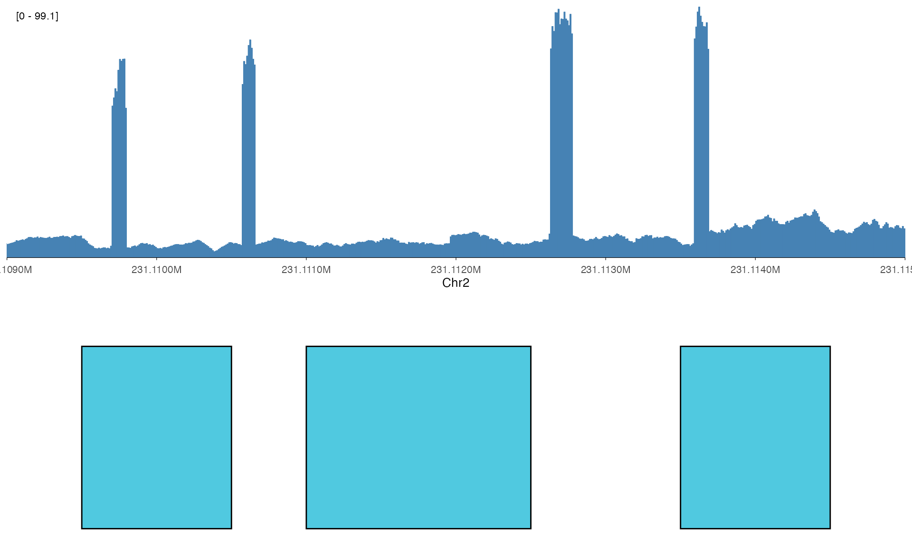
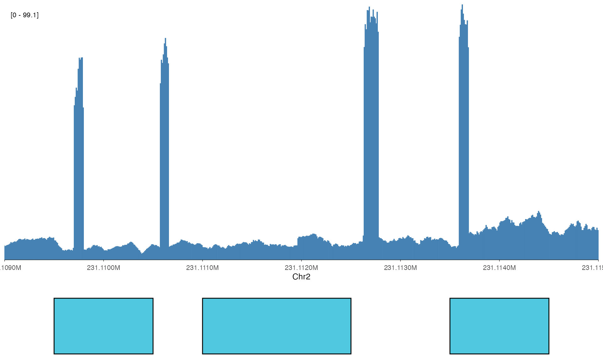
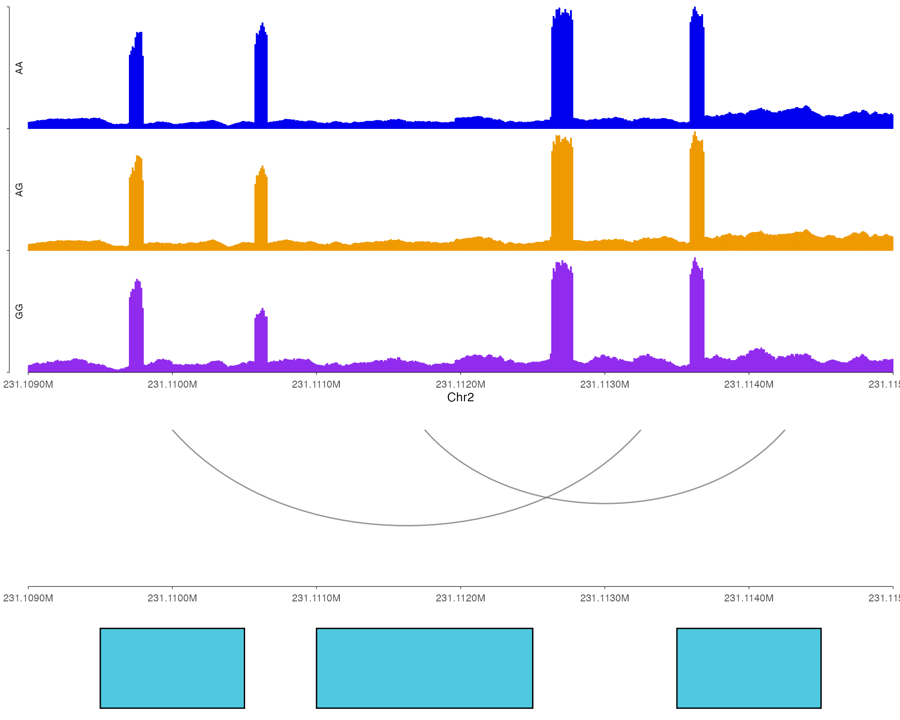
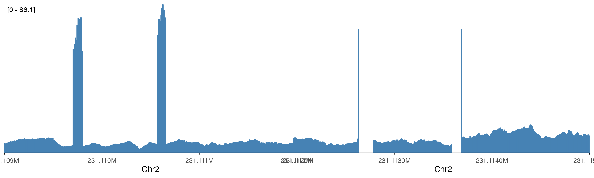
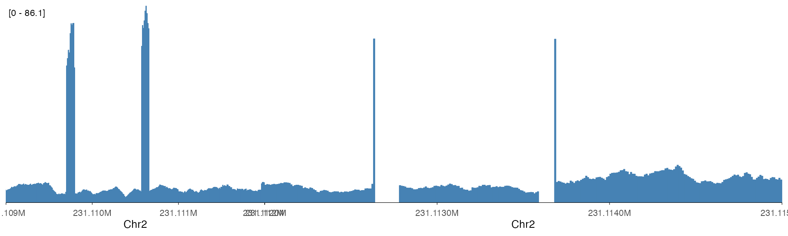
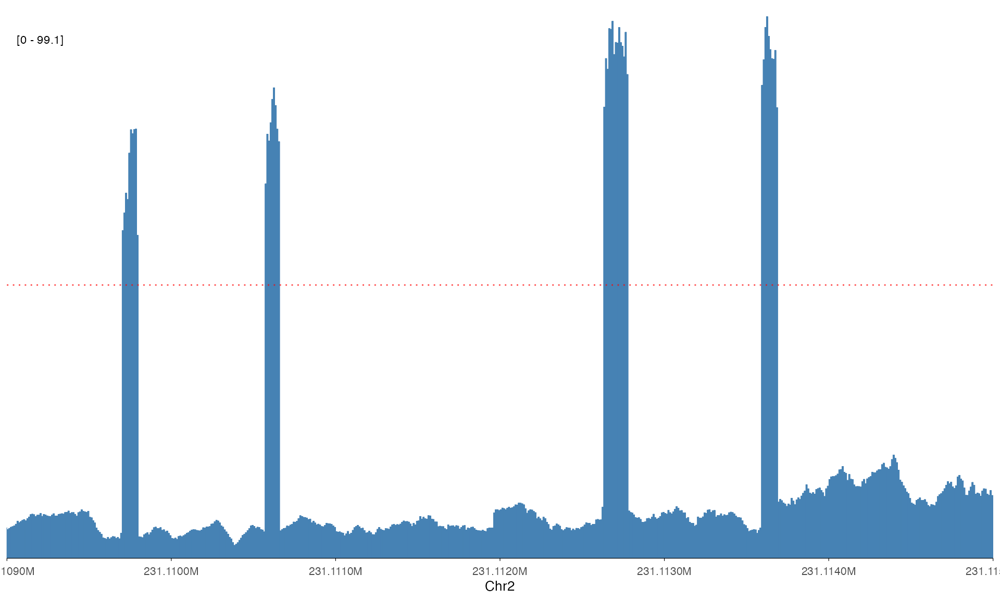
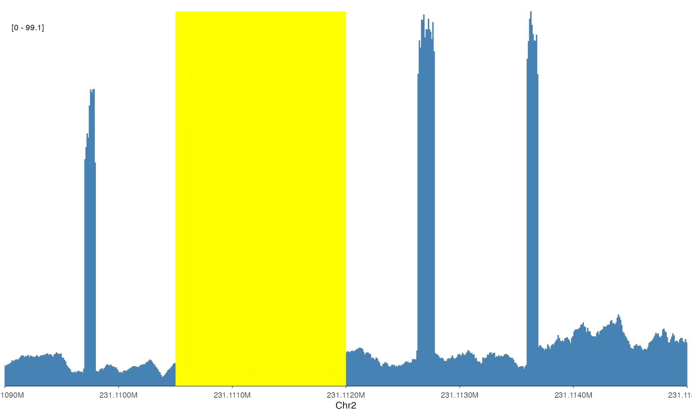
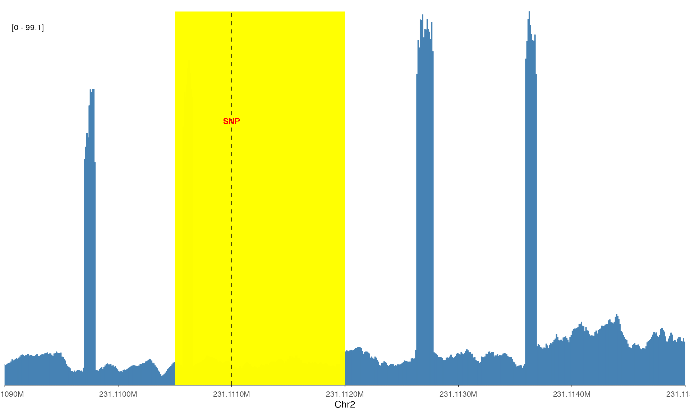
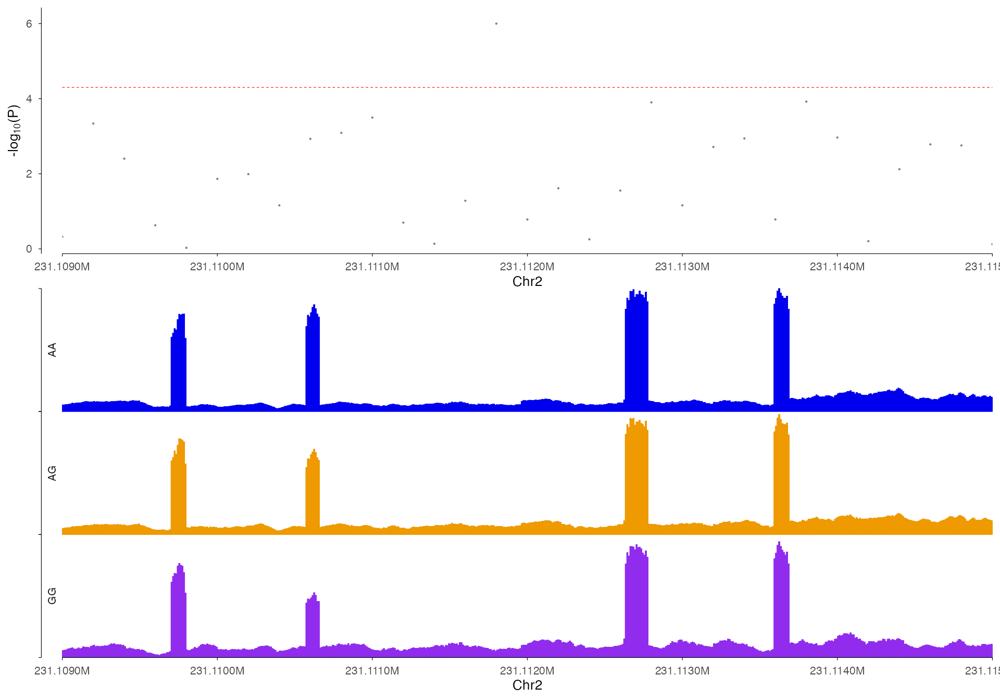
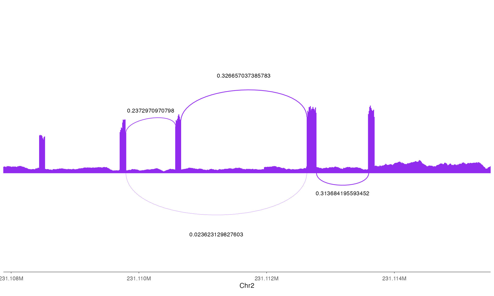

One of the key features of ezGenomeTracks is the ability to compose multiple tracks into a single, publication-ready figure. This vignette covers vertical and horizontal stacking, track height control, and adding annotations.
Vertical Stacking with vstack_plot()
The most common composition is stacking tracks vertically with a shared genomic x-axis.
Basic Stacking
# Define region
region <- "chr2:231109000-231115000"
# Load data
bw_file <- system.file(
"extdata",
"avg_chr2-231091223_231109786_231113600_0.bw",
package = "ezGenomeTracks"
)
# Create individual tracks
coverage_track <- ez_coverage(
bw_file,
region = region,
colors = "steelblue",
y_axis_style = "simple"
)
# Simulated peaks for this region
peaks_df <- data.frame(
seqnames = "chr2",
start = c(231109500, 231111000, 231113500),
end = c(231110500, 231112500, 231114500),
score = c(50, 100, 75)
)
peak_track <- ez_feature(
peaks_df,
region = region,
use_score = TRUE,
fill = "darkred"
)
# Stack them
vstack_plot(
coverage_track,
peak_track,
region = region
)
Controlling Track Heights
Use the heights parameter to control relative track
heights. Heights are specified for tracks 2 onward (relative to track
1).
# More emphasis on coverage, less on peaks
vstack_plot(
coverage_track,
peak_track,
region = region,
heights = c(0.3) # peak track is 0.3x the height of coverage
)
Stacking Multiple Tracks
# Load all three genotype bigWigs
bw_files <- list(
"AA" = system.file("extdata", "avg_chr2-231091223_231109786_231113600_0.bw", package = "ezGenomeTracks"),
"AG" = system.file("extdata", "avg_chr2-231091223_231109786_231113600_1.bw", package = "ezGenomeTracks"),
"GG" = system.file("extdata", "avg_chr2-231091223_231109786_231113600_2.bw", package = "ezGenomeTracks")
)
# Create a multi-track coverage plot
multi_coverage <- ez_coverage(
bw_files,
region = region,
colors = c("blue2", "orange2", "purple2"),
y_axis_style = "minmax",
facet_label_position = "left"
)
# Add peaks and interactions
interactions_df <- data.frame(
start1 = c(231109800, 231111500),
end1 = c(231110200, 231112000),
start2 = c(231113000, 231114000),
end2 = c(231113500, 231114500),
score = c(20, 35)
)
arc_track <- ez_link(
interactions_df,
region = region,
direction = "down",
colors = "gray40"
)
# Stack all
vstack_plot(
multi_coverage,
arc_track,
peak_track,
region = region,
heights = c(0.5, 0.3)
)
Horizontal Stacking with hstack_plot()
Use hstack_plot() to place plots side by side, useful
for comparing different genomic regions.
Comparing Regions
# Two different regions
region1 <- "chr2:231109000-231112000"
region2 <- "chr2:231112000-231115000"
plot1 <- ez_coverage(
bw_files[[1]],
region = region1,
colors = "steelblue",
y_axis_style = "simple"
)
plot2 <- ez_coverage(
bw_files[[1]],
region = region2,
colors = "steelblue",
y_axis_style = "simple"
)
# Side by side
hstack_plot(plot1, plot2)
Controlling Widths
# Make left plot wider
hstack_plot(plot1, plot2, widths = c(2)) # Right plot is 2x width of left
Adding Annotations
ezGenomeTracks provides helper functions to add annotations to any track.
Vertical Lines
Highlight specific genomic positions (e.g., SNP locations, TSS).
# Add a vertical line to mark a position
annotated_track <- add_vline(
coverage_track,
position = 231111500,
color = "red",
linetype = "dashed"
)
annotated_trackHorizontal Lines
Mark thresholds or reference values.
# Add a threshold line
annotated_track <- add_hline(
coverage_track,
y = 50,
color = "red",
linetype = "dotted"
)
annotated_track
Highlight Regions
Draw rectangles to highlight genomic regions of interest.
# Highlight a region
annotated_track <- add_rect(
coverage_track,
xmin = 231110500,
xmax = 231112000,
fill = "yellow",
alpha = 0.3
)
annotated_track
## Text LabelsAdd text annotations at specific positions.
# Add a label
annotated_track <- add_text(
coverage_track,
x = 231111000,
y = 60,
label = "Peak",
color = "red",
size = 4
)
annotated_trackCombining Multiple Annotations
# Chain multiple annotations
annotated_track <- coverage_track |>
add_rect(xmin = 231110500, xmax = 231112000, fill = "yellow", alpha = 0.2) |>
add_vline(position = 231111000, color = "red") |>
add_text(x = 231111000, y = 70, label = "SNP", color = "red", size = 3)
annotated_track
Real-World Examples
QTL Visualization
Combine Manhattan plot with coverage tracks to show genetic associations in context.
region <- "chr2:231109000-231115000"
# Simulated GWAS data for this region
gwas_df <- data.frame(
CHR = 2,
BP = seq(231109000, 231115000, by = 200),
P = 10^(-runif(31, 0, 4)),
SNP = paste0("rs", 1:31)
)
gwas_df$P[15] <- 1e-6 # Add a significant SNP
# Manhattan track
manhattan_track <- ez_manhattan(
gwas_df,
region = region,
chr = "CHR",
bp = "BP",
p = "P",
y_axis_style = "full",
threshold_p = 5e-5,
threshold_color = "red"
)
# Coverage tracks
coverage_multi <- ez_coverage(
bw_files,
region = region,
colors = c("blue2", "orange2", "purple2"),
y_axis_style = "minmax",
facet_label_position = "left"
)
# Stack
vstack_plot(
manhattan_track,
coverage_multi,
region = region,
heights = c(1.5)
)
Sashimi Plot with Gene Track
region <- "chr2:231107879-231115507"
# Load sashimi data
bw0 <- system.file("extdata", "avg_chr2-231091223_231109786_231113600_0.bw", package = "ezGenomeTracks")
link0 <- data.table::fread(
system.file("extdata", "chr2-231091223_231109786_231113600_0.sashimi", package = "ezGenomeTracks"),
header = FALSE,
col.names = c("seqnames", "start", "end", "name", "score", "strand")
)
# Sashimi track
sashimi_track <- ez_sashimi(
coverage_data = bw0,
junction_data = link0,
region = region,
colors = "purple2",
linewidth_range = c(0.1, 0.5),
height_factor = 0.03,
junction_curvature = 0.03
)
# Display
sashimi_track
Tips and Best Practices
Track order: Place tracks that need more vertical space (Hi-C, coverage) at the top, compact tracks (features, genes) at the bottom.
Consistent regions: Always use the same region string for all tracks in a stack to ensure proper x-axis alignment.
Heights: Start with equal heights and adjust iteratively. Coverage tracks often need 2-3x the height of feature/gene tracks.
Annotations: Add annotations to individual tracks before stacking for proper positioning.
Figure dimensions: Set appropriate
fig.heightandfig.widthin your R Markdown chunks orggsave()dimensions for publication.Legend placement: Use
show_legend = TRUEselectively on one track to avoid redundant legends.